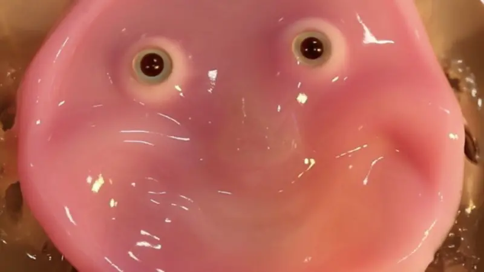

Talento estudiantil brilla en Olimpiadas de Robótica con proyectos inspirados en Marte y el medio ambiente
Proyecto Robótico en Marte
Atalaya, Veraguas – Estudiantes del Colegio Juan José Canova de Atalaya sorprendieron al público durante las Olimpiadas Regionales de Robótica con un ambicioso proyecto pensado para el planeta Marte. Se trata del robot "Water for Red Mars", una propuesta innovadora que busca extraer agua del subsuelo marciano para generar oxígeno e hidrógeno, elementos esenciales para la vida y como fuente de combustible.
“El agua en Marte está congelada en el subsuelo, entonces cuando el sensor de humedad detecte esa presencia, el brazo robótico bajará y, mediante fricción, extraerá el agua”, explicó Lía Gutiérrez, una de las estudiantes que forma parte del equipo creador del proyecto.
A pocos pasos de su stand, estudiantes de primaria de la Escuela Río de Jesús también se ganaron la atención con un robot diseñado para la seguridad ambiental. Su dispositivo tiene la capacidad de detectar gases peligrosos en el aire y emitir alertas de emergencia en tiempo real.
Robots japoneses con rostros creados con piel viva que se parecen más a los humanos

Japón desarrolla robots humanoides con piel viva
Japón dio un paso significativo hacia el desarrollo de robots humanoides biohíbridos con la creación de un rostro robótico cubierto de piel viva capaz de sonreír. Este avance, liderado por el profesor Shoji Takeuchi del Laboratorio de Sistemas Biohíbridos de la Universidad de Tokio, podría revolucionar la apariencia y funcionalidad de los robots en el futuro, según informó la agencia Reuters.
El equipo de Takeuchi logró adherir piel cultivada a un molde facial 3D utilizando anclajes perforados que imitan la estructura natural de los ligamentos de la piel humana. Este método permite que la piel se estire y se mueva sin comprometer la apariencia externa del robot ni dañarla durante el movimiento.
En una demostración, se mostró cómo un trozo circular de piel viva, anclado sobre un molde facial 3D, podía pasar de una expresión neutra a una sonrisa.
La piel viva en robots
La piel viva en robots permite movimientos faciales naturales sin comprometer su apariencia. (Takeuchi)
Además del rostro, los investigadores también cubrieron un dedo robótico con esta piel, logrando que se doble y mueva objetos pequeños con fluidez. Una de las ventajas clave de utilizar piel viva en robots es su capacidad de autocuración, lo que elimina la necesidad de reparaciones constantes cada vez que la piel se daña.
A pesar de estos avances, la tecnología aún se encuentra en una etapa temprana. Para que la piel pueda mantenerse en un robot a largo plazo, los científicos deberán integrar otros sistemas biológicos, como nervios, músculos y órganos sensoriales.
“Desarrollar un método para incorporar vasos sanguíneos o un sistema alternativo de suministro de nutrientes sigue siendo uno de los desafíos clave en los que estamos trabajando para extender la viabilidad de la piel fuera de entornos controlados”, explicó Takeuchi a ABC News.
Robot humanoide chino de 1,80 m completa una media maratón en Pekín

Tiangong Ultra: Primer robot en completar una media maratón
En un hito para la tecnología robótica, el humanoide chino Tiangong Ultra se ha convertido en el primer robot en completar oficialmente una media maratón en entorno urbano real.
El evento, celebrado en el distrito tecnológico de Yizhuang en Pekín, marca un importante avance en la robótica bípeda y señala el creciente desarrollo tecnológico de China en este campo. Tiangong Ultra cruzó la meta tras 2 horas, 40 minutos y 42 segundos, manteniendo una velocidad media de entre 7 y 8 km/h durante los 21 kilómetros del recorrido.
Esta hazaña, aunque impresionante, todavía quedó lejos de los tiempos humanos: el ganador keniano Machascaleb Alhamis completó el recorrido en 1 hora, 6 minutos y 32 segundos, mientras que la china Pan Yuancheng lideró la categoría femenina con un tiempo de 1 hora, 19 minutos y 1 segundo.
El robot, desarrollado por la empresa china Humanoid, cuenta con una estructura especialmente diseñada para esta disciplina, con un cuerpo ligero, piernas largas y un sistema mejorado de refrigeración en sus articulaciones.
A pesar de los avances tecnológicos, Tiangong necesitó tres cambios de batería durante la carrera y sufrió una caída por un fallo energético, lo que demuestra que aún existen desafíos por superar.
Tres desafíos para el Tiangong Ultra
“Teníamos tres metas: ganar, completar la carrera con un solo robot y terminar en menos de tres horas”, explicó Tang Jian, director técnico de Humanoid, quien destacó que tras la caída, el robot pudo continuar la carrera después de un cambio de batería.
La competición contó con una salida escalonada donde Tiangong partió primero, seguido por el robot N2 de Noetix y el DroidUp. Aunque varios robots se inscribieron, solo tres o cuatro lograron mantener una marcha sostenida, evidenciando que la mayoría aún requiere mayor desarrollo para competir eficazmente en este tipo de pruebas.
Xiong Youjun, director general de Humanoid, calificó el evento como "un experimento extremo para evaluar la fiabilidad del hardware y del software", y señaló que el objetivo final es desarrollar robots capaces de trabajar sin fallos, incluso en entornos peligrosos para los humanos.
La ministra de Asuntos Exteriores de China, Mao Ning, comentó la hazaña de Tiangong Ultra en x.com con un vídeo que muestra cómo el robot iba en paralelo al recorrido humano y cómo llegó a la meta en menos de 2 horas y 41 minutos.
El secreto: aprendizaje IA mediante imitación reforzada
El entrenamiento de Tiangong se basó en aprendizaje por imitación reforzada, utilizando datos reales de atletas humanos para ajustar su zancada a diferentes terrenos. Sus creadores anticipan que en el futuro incluso podrá manipular objetos mientras corre.
Este evento no solo fue una competición deportiva, sino también una plataforma para mostrar el avance tecnológico chino, con drones captando imágenes aéreas y vehículos eléctricos de Xiaomi marcando el ritmo de la carrera.
La vicedirectora del comité administrativo del distrito económico-tecnológico de Pekín, Liu Li, destacó que esta carrera representa "solo el principio" de una visión donde la robótica forme parte integral de la vida cotidiana.
Aunque la biomecánica humana sigue siendo superior en términos de resistencia, velocidad y autonomía, la imagen del humanoide de 1,80 metros trotando por las avenidas de Pekín junto a corredores humanos representa un avance significativo en la integración de la robótica avanzada en espacios públicos y actividades tradicionalmente humanas.
También hay que destacar que, si bien es una hazaña para la robótica, una mujer española ha corrido siete maratones completos (42 km) en siete días y siete continentes.